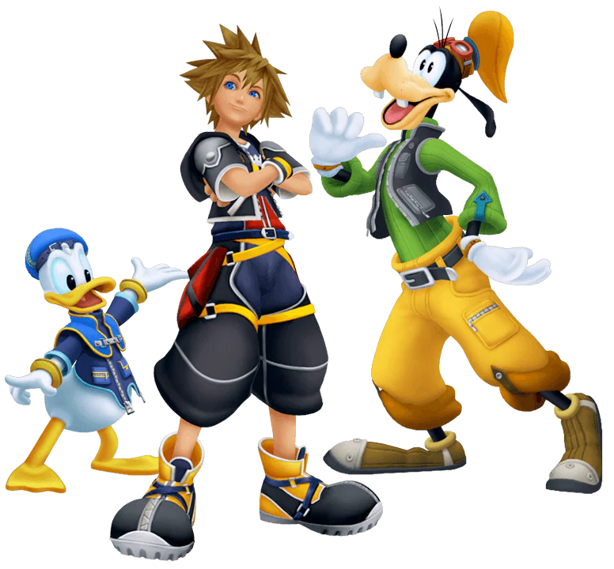

Kingdom Hearts
Kingdom Hearts is the first game in the Kingdom Hearts series developed and published by Square Enix (formerly Square Co., LTD) for PlayStation 2 and directed by Tetsuya Nomura. This action RPG game began as a collaboration between Square and Disney Interactive Studios and feature a cast of Disney voice actors. The game was very well-received for mixing action and RPG gameplay elements and for incorporating Disney, Final Fantasy, and the game's own original characters.
The game revolves around a fourteen-year old boy named Sora and details his adventures after his home-world is destroyed by sinister creatures known as the Heartless. It follows his attempts to restore his world and reunite with his friends, and in the process, he meets many characters from classic Disney films and from the Final Fantasy video game series. The main theme song for the game is "Simple and Clean", performed by Utada Hikaru.